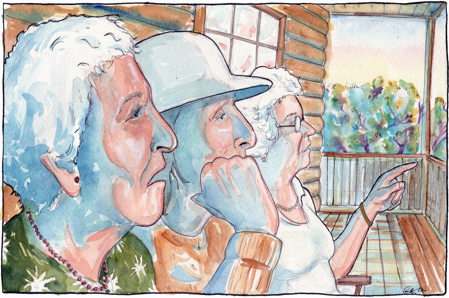

It was our last summer in Florida. Our oldest siblings had fled west on Route 66, eager to escape the toils of farm life, eager to find their places in a country on the brink of war. My brother Bruce and I stayed, the last in the line of seven, too young to go anywhere our feet couldn’t take us. The sweating swamps and budding crops tied us to the South, where we rolled watermelons down the pastures. Where we sucked on sugar cane. Where we once (and only once!) found ourselves clutching at our bellies—hearts pounding, mouths wet—puking in the backwoods of Bonifay.
Days before, Dad let the two of us take the wagon into town, the first and only time in our memories. Our horse had carried our family along these roads so many times that we just had to say, “Okay Molly, let’s go home,” and she’d tow us there. We were heading to the movie house, Bonifay’s one-room theater, which had a large projector that would hum along loudly with the crooning voices of Gene Autry and Dale Evans as it wound.
We darted over to the benches outside the ticket window, but Uncle Jim wasn’t there this time warming the wooden seat. Usually we’d find him sitting with another logger outside the theaters, chatting with the people who flowed past. He’d spot us running up to him and slip us each a quarter. “Go to the movie and get a coke,” he’d order as he swiped us on the backside, scooting us in, where we’d feast on ten-cent popcorn and the heroic feats of cowboys. That day our pockets jangled with coins, our hearts light with the arrival of a new Roy Rogers western.
When the movie ended, we poured a pack of Planters peanuts into the sodas and drank them down, savoring each of the salty sweet peanuts that floated in their fizzy bath. The summer sun still hung high in the sky, the whispering breeze prickling the layer of sticky sweat on our skin. We hopped in the wagon, calling to Molly to take us home.
As we were about to enter the swamps, Bruce grabbed the reins. “Let’s go see Granny,” he said, the wagon veering to the right. When we got there, Granny, Aunt Rosa and Aunt Ida were rocking on the porch, all three hunched and shriveled from years of working in the sun.
Though our Mom never drank alcohol, rolled cigarettes, or uttered an unkind word, her sisters were of a different stock. They spat fire that matched the blaze of the sun at high noon.
Illustration by Cal Brackin
Aunt Rosa called to us and Granny waved us inside to eat the sugar cookies she’d made. While we nibbled, the three women chattered and bickered and plied us with tales from our great grandfather’s time. As they fell back into their rhythmic creaking, the heat slick on their freckled skin, each aunt dug out her tin of snuff. Aunt Ida tucked it neatly along the underside of her mouth, the black wad bulging. Then she pressed her fingers to her pursed lips like the ends of a slingshot, and pftoot! sent a clean stream of inky spit through her fingertips, through the railings and onto the sand without a single splash. Of all the porches in town, Aunt Ida’s was the tidiest, and Aunt Rosa’s teeth the whitest. I never caught her without a toothpick nearby.
After we had our fill of sugar and stories, we hugged and headed home. Lulled to sleep by Molly’s steady stride, the heat and sweets, my mind drifted back to the movie we’d seen. There I was, the handsome Roy Rogers with ol’ Gabby Hayes, my most trusted friend at my side, chasing the man who cheated me out of my gold and killed my—
“Whoooa, Molly!”
My eyes snapped open, the scene cut by the bright blue sky. The wagon rolled to a stop. “Did you see that?” Bruce asked. He stood up and looked back, shading his eyes with his hand. I shook my head, blinking. “It’s a package,” he said as he hopped to the ground. I climbed down, my feet skipping against the hot sand to Bruce, where he squatted by a bruised package. Inside were a dozen plugs of Red Mule chewing tobacco.
“Look at all that chew,” Bruce marveled. He folded back the outer covering and pulled out a plug. “Uncle Jim would like these.” He was quiet for a moment. He tossed a pack to me.
We picked up the package and stowed it in the wagon. I sat upright on the ride home, my heart dancing in my chest, the scenes from the film forgotten.
We found Uncle Jim sitting at the table, a solid black rectangle of chewing tobacco in hand. He cut off a cube with his pocketknife and slipped it in his jaw. A stained tin can lounged beside him like an old friend.
“We found this for you,” Bruce said, hefting the tattered package onto the table. Mom and Uncle Jim peered inside.
“Where’d you find this?” she asked.
“Alongside the road,” Bruce replied.
“Must’ve fallen off a wagon. Can’t be going too fast on these country roads,” Uncle Jim said. He inspected the contents. “Mmm, one plug missing out of there. Maybe the guy that bought it took a plug out.” Mom had already turned back to the counter, where she was molding the evening’s biscuits. Bruce looked at me and shrugged. Uncle Jim eyed the two of us, the bulge of tobacco in his cheek hooking his lips into a faint grin. His eyes twinkled. “Thank you for keeping your old Uncle Jim in mind.”
“You’re welcome, sir,” Bruce said. I didn’t know what to do with my hands, so I held them behind my back, then let them dangle at my sides. Finally, I stuffed them into my pockets.
“You take care of each other,” Uncle Jim said to me.
“Yes’ir,” I stammered.
“Now go wash up. Supper’s almost ready.”
The next day, we headed back to town to go to church. All the men sitting on the benches or leaning against the storefront windows suddenly stood out. Smoothly, they’d take out a plug and bite off a corner, their stream of conversation unbroken. I was mesmerized. All of these little actions--that careless ease with which the adults around me could chew and dip and snuff and spit--made my mouth itch and my heart flutter.
“It’s time,” Bruce hissed when we returned from church. He yanked me by the back of the shirt. My pulse quickened. The twigs from the switch bush snagged my trousers as Mom’s face leapt to mind. We slipped over to the barn. Bruce climbed up the ladder to the loft where we’d jumped hundreds of times before, once with an umbrella just to see whether the wind would whisk us away. He dug into the straw and produced a single brick of chew. “To Billy’s,” he said.
Billy Anderson lived down the street from us. He was a wiry eleven year old, a year older than Bruce and a decade more experienced. He cursed and drank and smoked before either of us knew what was what. Billy wasn’t home, but we went over to our usual spot anyway. The soft ground, moist from the morning steam, yielded to our passing. The damp air rich with the wildflowers clung to our skin. Bruce squatted in the culvert, a couple clandestine beer bottles poking their necks out of the sand. “You ready?” he asked. I nodded, my mouth dry and my palms slick.
He peeled back the paper. The sweet smell of spicy black licorice, menthol ointment, and tar hung in the air. Bruce cut off a couple wads and held one out to me. As I pinched it between my fingers, my eyes found his. In that moment, I forgot about getting caught and what Mom and Dad might do or how Uncle Jim would wink at us because he’d know we’d joined his world. In that moment, the earth rearranged itself. On one side of time glowed the pleasant summer of childhood, and on the other, that strange grown-up world we were on the cusp of discovering. I shoved the tobacco alongside my jaw.
My mouth burned.
Thick black liquid sputtered out of Bruce’s mouth like the water that stuttered out of our well’s spiggot. Then he glanced over at me, unsteady on his feet. He puckered his lips and with a wet squelch, shot a drippy stream of spit over the culvert and onto the sand, the rank juices spattering the telltale bottles.

Illustration by Cal Brackin
Brown drool dribbled down my palm, and black gunk slid beneath my nails as I scrambled to dam it up. Some chunks slipped past my teeth and gummed up my throat. Its cloying scent fused with the tangy stink sweating off of me. Heart pounding, I started forward, wobbling to my right, then left, elbowing Bruce’s side. I hit the ground, my head light and fuzzy.
“You’re looking green,” Bruce said, his breath ragged. Then he leaned over and started retching. My stomach flip-flopped. Hot liquid flooded my mouth like a gushing spring. The corners of my eyes started to leak and my nose burned with runny mucus. Everything I’d eaten boiled up my throat and tore out of me, the slimy brown bile splattering against the metal.
When our horizons finally steadied, Bruce flung the plug away, dashing the black devil to the dirt. We slumped against the ditch. I stank with vomit and tobacco and sweat. Fear seized my beating chest.
“Don’t worry, don’t worry,” Bruce mumbled. “We can wash off in the spring.”
I nodded weakly. He pulled himself up and offered me his hand.
We stumbled over to the spring that fed into one of the swamps nearby. Bruce stripped off his overalls and jumped in. The icy water shocked me back to my senses, but my stomach still churned. I wished for my sister Bessie with every thump of my heart. I wanted her to comfort me and stay next to me. Before she left for the West, she used to dry my eyes with her handkerchief and sit with me whenever I’d earned a whipping.
When Mom saw us, our skin was so pale and our expressions so ill that she just pursed her lips and sent us to bed. That evening, after an exhausting nap, Mom read us a letter that’d arrived that afternoon, all the way from California.